How Classes work¶
What is a class?¶
Contentserv uses two types of classes: (1) Nature Class and (2) Non-Nature/Attribution Class. Classes define the base configurations for products. Each class that is given to a product allows that product to have a more precise definition. There are multiple levels of classes that can be used in conjunction to achieve a more refined classification.
The top level of class is Nature Class. This sets up the type of product base to start with. Nature Classes are customizable in the Settings or Administration. Below are the several default class types:
Default Nature Classes¶
- Single Article
A stand-alone product which is a sellable item.
Example:
Dog Bed (Male/Female color scheme).
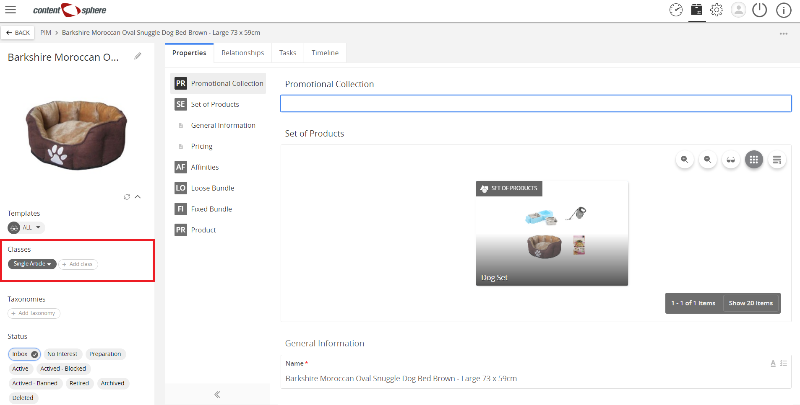
- Product
A placeholder for a group of common products.
Examples:
- Dog Bed.
- Red Bull as the Product, which contains variants like Regular, Sugarfree, and Zero.
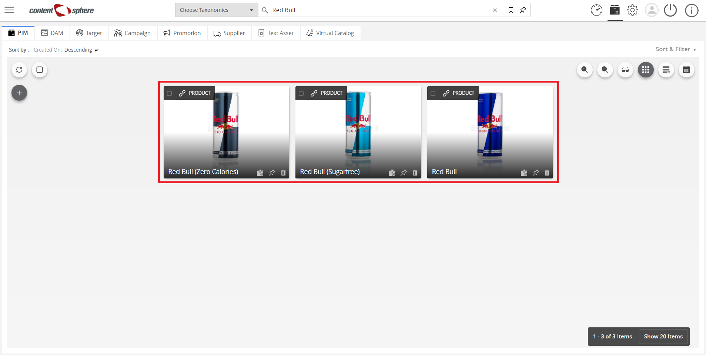
- Loose Bundle
A group of products where the quantity of each product can be defined by the retailer.
Example:
Water Bottle Pack: Buy 10 or more for 15% off. Each item over 10 can still receive the discount.
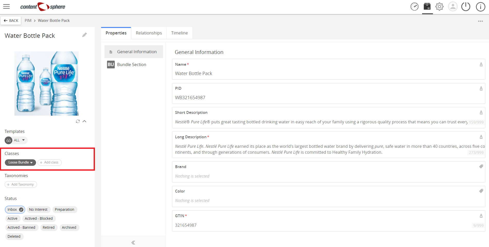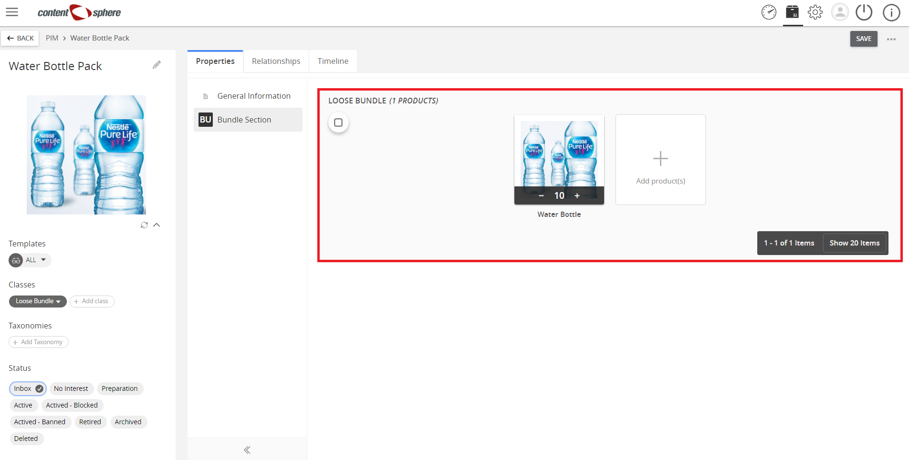
- Fixed Bundle
A group of products where the quantity of each product is fixed.
Example:
A Shaving Kit Pack includes 3 blades and a shaving cream. As these are in the same packaging, the customer cannot add more blades for that pack purchase.
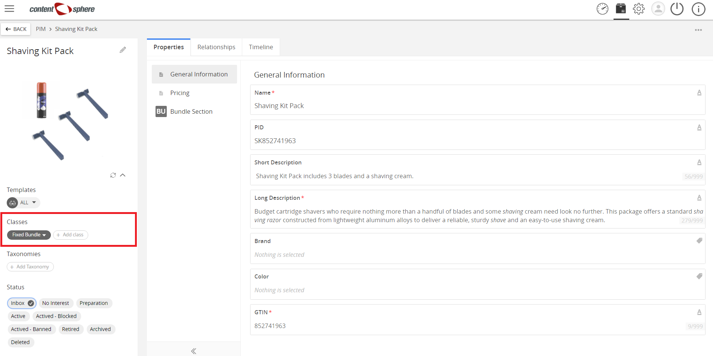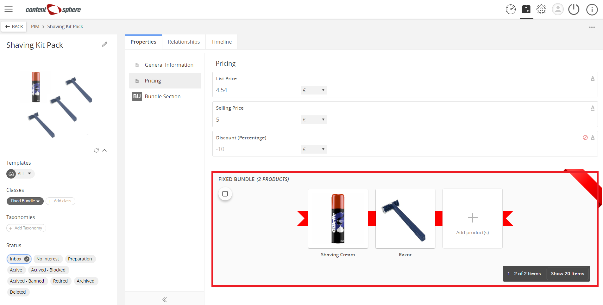
- Set of Products
Set of product recommendations like clothing pieces put on a mannequin in fashion stores.
Example:
Hat, T-Shirt, Shorts, and Sandals for use on mannequins.
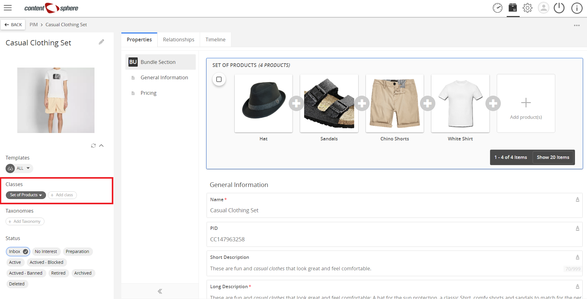
- Promotional Collection
A group of products which is offered at a discounted price.
Example:
Buy 3 bags of Dog Food for the price of 2.
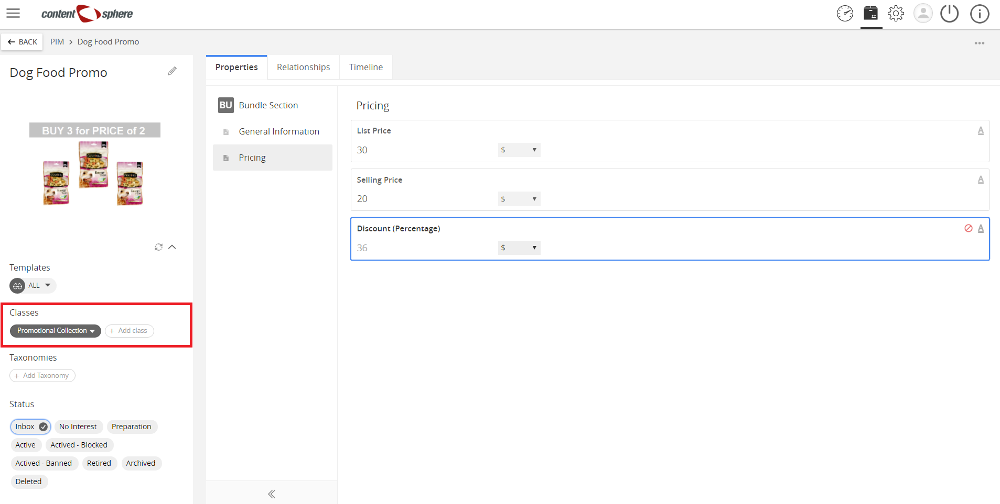
Attribution Classes¶
(Also called Non-Nature Classes)
Products, defined only by a Nature Class are not yet categorized in your PIM. To give a more specific categorization, you can add Attribution Classes. The added benefit of using one or many Attribution Classes is that they have their own properties that the product will inherit. For example, a mobile phone product can have a ‘Mobile Attribution Class’ associated with it, which would include properties for screen size, storage, etc. Every mobile phone product in your system can be given this Attribution Class. Other Attribution Classes can be added to the mobile phone example such as Electronics or Computer.
Below are examples of Attribution Classes and potential properties that they may hold. Each class is fully customizable through the Settings backend.
Attribution Class examples with Properties¶
- Electronics
- Voltage
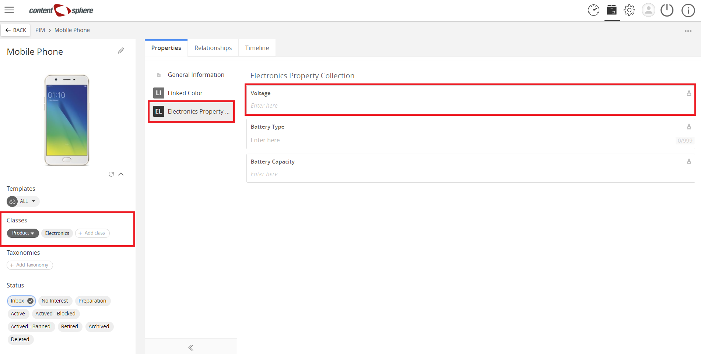
- Mobile (Cell phone)
- Screen size
- Storage and RAM
- Operating System
- Camera
- Food
- List of Nutritional Information
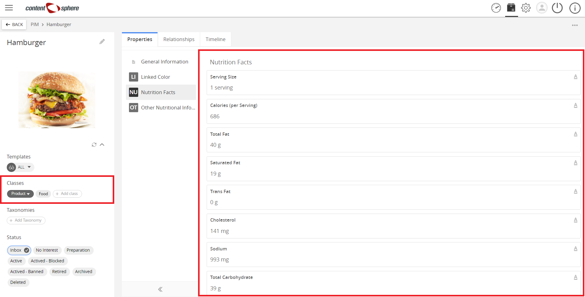- Contains nuts?
- Contains pork?
- Contains beef?
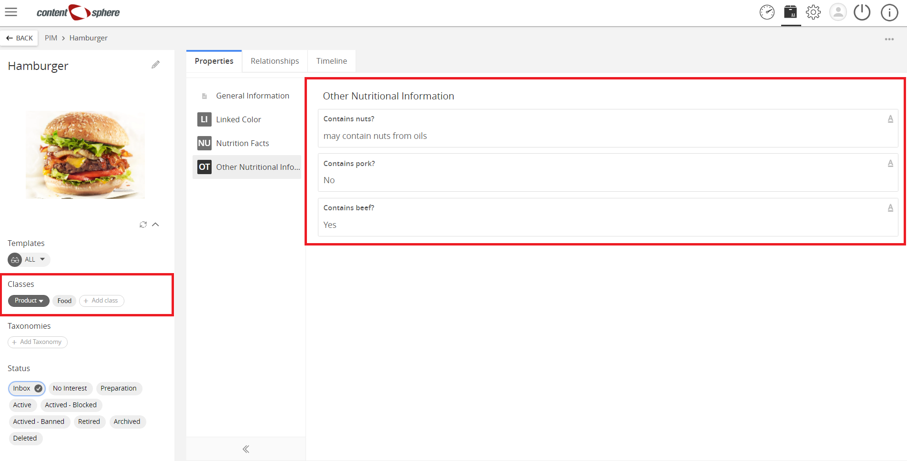
| Related topics: |
|